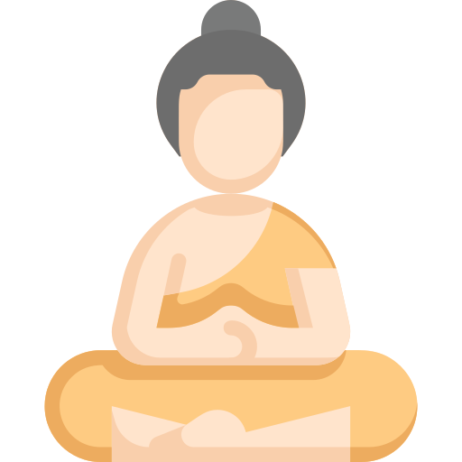
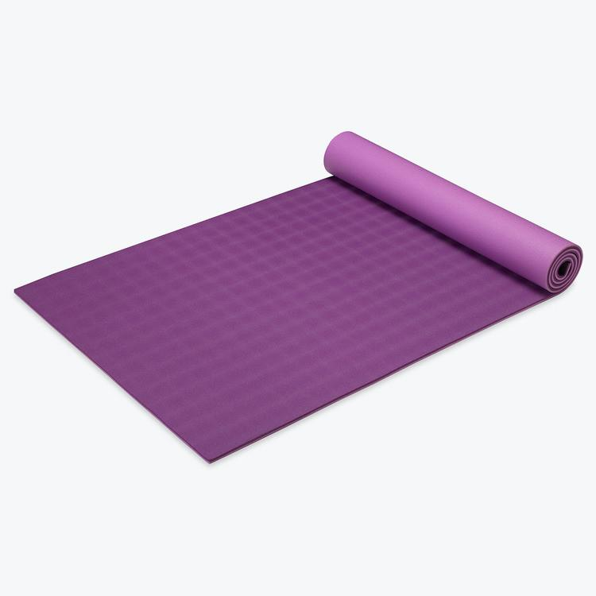

რა არის მედიტაცია?
მედიტაციის პრაქტიკა არსებობს ათასწლეულების მანძილზე. ადრე მედიტაციას მიმართავდნენ ცხოვრების სულიერი და მისტიური ასპექტების გააზრებისა თუ ამოხსნის მიზნით.
წაიკითხეთ მეტიინტერვალური შიმშილი
შიმშილის დღეები შემთხვევით არ შეირჩა, რადგან სწორედ ამ დღეებში ხდება მზესა და მთვარეს შორის მიმზიდველობა
წაიკითხეთ მეტიპრანაიამა-სარგებელი
პრანაიამა-ამშვიდებს, ხსნის სტრესს, აუმჯობესებს ფილტვების მდგომარეობას და სისიხლის მიმოქცევას
წაიკითხეთ მეტირა არის ჩაკრები
7 ძირითადი ჩაკრა არსებობს. 1. ჩაკრა მულადხარა - ფესვი, საფუძველი, ფუნდამენტი, ბაზისი, საყრდენი.
წაიკითხეთ მეტი
დღის რომელ მონაკვეთში სჯობს იოგა?
ვარჯიშისთვის საუკეთესო დროა, როდესაც არავინ შეგაწუხებთ. დილით ვარჯიში, მოგიმატებთ ენერგიას მთელი დღის განმავლობაში
წაიკითხეთ მეტი
როგორ შევარჩიოთ დასაფენი?
უპირველეს ყოვლისა, არჩევისას ყურადღება უნდა მიაქციოთ მასალას, რადგან გარკვეულ პირობებში თქვენი ვარჯიშის კომფორტის და სტაბილურობის დონე დამოკიდებულია მის თვისებებზე
წაიკითხეთ მეტი